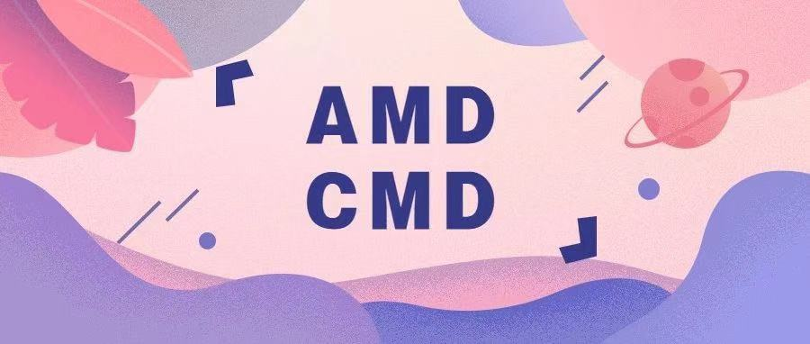

前端从刀耕火种时代脱离出来，离不开其生态环境的完善，各种插件和库的层出不穷，让我们减少了自己造轮子的繁杂过程，从而大大提高了开发者的工作效率。造轮子也就是模块化的过程。
但是随着模块化的发展，一个项目也就会由很多的模块组成，而这些模块有一部分是自己的，也有一部分是别人开发的，模块的管理就成为了很大的一个问题。正是因为有这样的需求，才引起了模块化管理规范的发展。

模块化经历了下面几个阶段，也表明了模块化的作用和发展方向：
- 代码的封装和复用
- 减少全局的污染、冲突
- 部分属性和方法的私有化
- 模块的管理规范化 现在在大型项目中，对模块的管理基本上是 Webpack + CommonJS + ES6 Module，但是了解其背后的发展和原理还是很有意义的。
封装和复用
当代码越写越多时，我们常常会把重复出现的内容或者复杂的功能封装成一个个的函数，方便我们直接调用，减少维护成本和工作量。
减少污染和冲突
当我们封装的函数越来越多，全局的变量就会越来越多，不可避免会导致一些冲突，尤其是不同开发者写的模块。
为了避免全局变量的污染和减少模块的冲突，我们会将单个模块封装到一个对象内部：1
2
3
4
5
6
7
8
9
10const module = {
_number: 10,
f1: () => {
console.log(123)
},
f2: () => {
console.log(456)
},
//...
}
IIFE
但是这样仍然存在问题，就是模块内部的属性可以通过外部直接修改，这是非常危险的。
于是，聪明的开发者们想到了使用 IIFE，即立即执行函数表达式。也称为模块模式。函数拥有自己的作用域，这不仅能减少全局的污染，还可以对内部属性起到一定保护作用。
1 | |
如 JQuery：1
2
3
4
5(function (global, factory) {
})(typeof window !== 'undefined' ? window : this, function(window, noGlobal) {
// 这里把 JQ 抛出给全局
});
JQ 的这种模块创建模式也成为了一种经典。
其好处在于外部不能直接修改内部的属性，从而起到一定防御作用，可以模拟私有属性。只需要将外部所需的方法和属性通过一定的方式抛出去即可。
IIFE 可以说是主要的模块化手段，其中 CMD、AMD、commonJS 都是基于 IIFE 实现的。ES6 Module 在各大浏览器中还没有得到支持，仍然会转成 IIFE 来运行。
模块管理规范
有了了模块，我们就可以更方便地使用别人的代码，想要什么功能，就加载什么模块。但是，这样做有一个前提，那就是大家必须以同样的方式编写模块，否则在使用的时候就会出现问题。因此就有了模块规范的出现。
CommonJS
2009 年， 一名来自 Mozilla 团队的的工程师 Kevin Dangoor 开始捣鼓了一个叫 ServerJS 的项目，他是这样描述的：
“在这里我描述的不是一个技术问题。这是一个关于大家齐心合力，做出决定向前迈进，并且开始一起建造一些更大更酷的东西的问题。”
这个项目在 2009 年的 8 月份更名为今日我们熟悉的 CommonJS 以显示 API 更广泛的适用性。
CommonJS 是一个旨在 Web 浏览器之外，为 JavaScript 建立模块生态系统的约定的项目。其创建的主要原因是缺乏普遍接受的 JavaScript 脚本模块单元形式，而这一形式可以让 JavaScript 在不同于传统网络浏览器提供的环境中重复使用。
同在 2009 年，美国程序员 Ryan Dahl 创造了 Node.js 项目，将 JavaScript 语言用于服务器端编程。
在浏览器环境下，没有模块也不是特别大的问题，毕竟网页程序的复杂性有限；但是在服务器端，一定要有模块，与操作系统和其他应用程序互动，否则根本没法编程。
Node.js 的模块系统，就是参照 CommonJS 规范实现的。也是我们最为关注的 CommonJS 规范的实现。
（1）Node.js 中的 CommonJS 规范：
1 | |
对比 exports 和 module.exports 的区别：
- 当 exports 和 module.exports 同时存在的时候，module.exports 会盖过 exports
- 当模块内部全部是 exports 的时候， 就等同于 module.exports
- exports 其实就是 module.exports 的子集
CommonJS 规范不适用于浏览器环境。它采用的是同步加载方式。这对服务器端不是一个问题，因为所有的模块都存放在本地硬盘，可以同步加载完成，等待时间就是硬盘的读取时间。但是，对于浏览器，这却是一个大问题，因为模块都放在服务器端，等待时间取决于网速的快慢，可能要等很长时间，浏览器处于”假死”状态。
因此，浏览器端的模块，不能采用”同步加载”（synchronous），只能采用”异步加载”（asynchronous）。这就是AMD规范诞生的背景。
AMD
AMD 是 Asynchronous Module Definition 的缩写，意思就是 异步模块定义 。它采用异步方式加载模块，模块的加载不影响它后面语句的运行。它是一个在浏览器端模块化开发的规范，由于不是原生支持，使用AMD规范进行页面开发需要用到对应的函数库 —— 也就是大名鼎鼎的 RequireJS，实际上 AMD 是 RequireJS 在推广过程中对模块定义的规范化的产出。
RequireJS 主要解决了异步加载模块，以及文件之间的依赖问题。它具有两个核心方法：
- define(id, dependencies, factory)：定义模块
- id：可选参数，模块标识，即名称。如果没有，则使用文件名作为标识
- dependencies：可选参数，当前模块的所有依赖模块，是一个包含所有依赖模块名称的数组
- factory：必选参数，模块初始化要执行的函数或对象。如果为函数，它应该只被执行一次，其返回值作为模块的输出值；如果是对象，此对象应该为模块的输出值。
- 作为函数时，其参数为前置依赖模块的输出值
require(dependencies, callback)：引入模块
- dependencies：可选参数，需要加载的依赖模块名称数组
- callback：必选参数，在模块加载完成之后执行的回调函数
- 其接收的参数是前置依赖模块的输出值
1 | |
在使用 RequireJS 声明一个模块时，必须指定所有的依赖项 ，这些依赖项会被当做形参传到 factory 中，对于依赖的模块会提前执行，这被称为：依赖前置。
这会导致一个问题，当模块中的内容是条件执行，并不需要加载所有的依赖模块时，RequireJS 仍然会加载所有的依赖模块。正是因为 RequireJS 存在这样的问题，也就导致了 CMD 的出现。
CMD
CMD 是 Common Module Definition 的缩写，意思是通用的模块定义。它实际上只是对 AMD 规范进行了一定的优化，其经典实现之一 SeaJS 的用法与 RequireJS 十分相似。
其主要区别在于解决 RequireJS 的依赖前置问题，CMD 推崇的是依赖就近，实际上仍然是异步加载模块。
1 | |
factory 有三个参数：
- require：就是核心方法，用于在内部加载模块
- exports：是一个对象，用来向外提供模块接口
- module：是一个对象，上面存储了与当前模块相关联的一些属性和方法
按照 CMD 规范的依赖就近的规则定义一个模块，会导致模块的加载逻辑偏重，需要使用把模块变为字符串解析一遍才知道依赖了那些模块，这也是很多人诟病 CMD 的一点。
CMD 的市场不大，在 ES6 Module 出现之前，社区中最主要是 CommonJS + AMD，一个用于后端，一个用于前端。
ES6 Module
ES6 Module 的出现，表示 JavaScript 终于有了原生的模块体系，在语言标准的层面上，实现了模块功能，而且实现得相当简单，完全可以取代 CommonJS 和 AMD 规范，成为浏览器和服务器通用的模块解决方案。
ECMAScript 6 Modules 的目标是创造一个让 CommonJS 和 AMD 用户都满意的格式
ES6 模块的设计思想是尽量的静态化，使得编译时就能确定模块的依赖关系，以及输入和输出的变量。CommonJS 和 AMD 模块，都只能在运行时确定这些东西。
1 | |
CommonJS 实质上是整体加载了 fs 模块（即加载fs的所有方法），生成一个对象，然后再从这个对象上面读取 3 个方法。这种加载称为运行时加载，因为只有运行时才能得到这个对象，导致完全没办法在编译时做静态优化。
ES6 模块不是对象，而是通过export命令显式指定输出的代码，再通过 import 命令输入。
1 | |
ES6 Module 实质上是从 fs 模块加载 3 个方法，其他方法不加载。这种加载称为编译时加载或者静态加载，即 ES6 可以在编译时就完成模块加载，效率要比 CommonJS 模块的加载方式高。当然，这也导致了没法引用 ES6 模块本身，因为它不是对象。
由于 ES6 模块是编译时加载，使得静态分析成为可能。有了它，就能进一步拓宽 JavaScript 的语法，比如引入宏和类型检验这些只能靠静态分析实现的功能。
除了静态加载带来的各种好处，ES6 模块还有以下好处：
- 不再需要 UMD 模块格式，将来服务器和浏览器都会支持 ES6 模块格式。目前，通过各种工具库，其实已经做到了这一点
- 将来浏览器的新 API 就能用模块格式提供，不再必须做成全局变量或者 navigator 对象的属性
- 不再需要对象作为命名空间（比如Math对象），未来这些功能可以通过模块提供
ES6 Module 主要由两个命令组成：
- export 导出模块内容
- import 导入模块内容
1 | |
export 和 export default 的区别：
- export default 作为默认输出，只能使用一次，并且不能与 export 同时使用，而 export 可以在模块中多次使用
- export 导出时必须就有名称，且在导入的时候必须使用相同的变量名来接收，并且需要使用解构的形式；而 export default 导出时可以不需要名称，导入时也不需要考虑模块内部的变量名，并且不需要大括号包裹，只需要自己定义名称进行接收即可
import 也可以直接执行一个模块，而不去接收值
1 | |